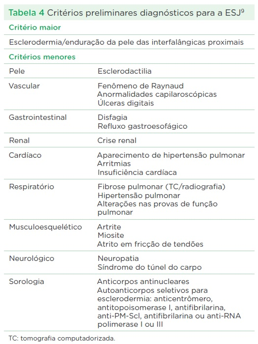

Esclerodermia significa "pele dura", é a terceira doença reumatológica mais comum na pediatria, precedira por artrite idiopática juvenil e lupus eritematoso sistêmico. As características comuns dessas doenças são a inflamação e a fibrose da pele. As duas formas mais comuns são a esclerodermia localizada juvenil (ELJ) e a esclerodermia sistêmica juvenil (ESJ).
É rara, não há dados epidemiológicos no brasil, apenas 2 a 3% de casos ocorrem em menores de 20 anos de idade. Ocorre 3 vezes mais em meninas que em meninos com idade igual ou superior a 8 anos.
É rara, porém, 10 vezes mais comum que a ESJ, mostram uma taxa de 1:1 milhão. A forma linear (65%) é a mais comum, seguida por em placa (26%), generalizada (7%) e profunda (2%), porém, os pacientes podem apresentar sobreposição das formas e mistura dos subgrupos e a idade média de apresentação é de 7,3 anos.
A causa é desconhecida, envolve múltiplas células do sistema imune adaptativo e inato, da vasculatura e do tecido conjuntivo. Os fibroblastos participam da patogenia fibrótica, porém, é incerto o mecanismo de ativação inapropriada ou de controle dessa ativação.
Vários agentes etiológicos foram sugeridos como possíveis causadores da doença, porém, nada comprovado. As drogas são bleomicina, ergotamina, bromocriptina, pentazocina, carbioda, vitamina K, história de trauma. Há incidência aumentada com doenças autoimunes, como a tireoidite de Hashimoto, o vitiligo, doença celíaca, diabetes tipo I e outras. Há associação também com síndrome de Turner
Há clara presença de alterações vasculares e imunológicas, porém, não se sabe o que desencadeia o desenvolvimento de fibrose de pele e dos órgãos internos, sendo a vasculopatia a característica da doença, o fenômeno de Raynaud e as ulcerações digitais.
Há 3 componentes envolvidos, a ativação imune, o dano endotelial (vascular) e a síntese excessiva de matriz extracelular com deposição de um colágeno estruturalmente normal. Há vasoconstrição mediada por endotelinas. Cerca de 20-30% dos pacientes possuem anticorpos anticelulares endoteliais.
A morfeia em placas é a forma mais benigna e ocorre mais frequentemente no tronco e menos comum nos membros. A evolução é a seguinte: fase inflamatória eritematose, fase esclerótica de enduração e fase de atrofia da derme com hipo ou hiperpigmentação, que costuma se resolver em 3 a 5 anos, porém, ao longo dos anos, novas lesões podem aparecer.
Na morfeia gutata, as lesões são múltiplas, pequenas (2 a 10 mm de diâmetro), hipopigmentadas e há também pápulas pigmentadas. A epiderme é fina e atrófica.
Queloide morfeia, também chamada de morfeia nodular, caracterizada por placas que lembram cicatrizes pós-traumáticas, podem ser únicas ou múltiplas.
Morfeia generalizada, quatro ou mais placas maiores que 3 cm são confluentes ou cobrem mais que três áreas anatômicas. Podem causar desfiguração, contraturas e ulcerações.
Forma linear é a forma mais frequente em crianças, enduração linear que envolve a derme, tecido subcutâneo, às vezes músculo e osso. Lesões assimétricas, orientadas ao longo do membro. Associa-se a crescimento anormal do membro ou atrofia muscular.
Lesões em golpe de sabre, causado por anormalidades vasculares cerebrais que podem ser encontradas, assim como lesões em olho ou dentição. As manifestações neurológicas são convulsões, cefaleia, paralisia facial.
Um quarto das crianças podem desenvolver artrite, com VHS positivo e presença de autoanticorpos. Neurológicos compreendem epilepsia, cefaleia ou alteração no comportamento, calcificações intracranianas e de substância branca. Podem estar presentes fenômeno de Raynaud, alterações oculares, doença gastrointestinal ou doença pulmonar restritiva.
Anormalidades motoras do esôfago com refluxo foram descritas em adultos e em crianças. Achados pulmonares com alterações restritivas ocorrem em crianças com lesões circunscritas, assim como nenhum outro envolvimento de órgão.
Raro na criança, sendo difusa ou limitada. Tem início insidioso, normalmente com intervalo entre diagnóstico e aparecimento da doença prolongado, podendo apresentar períodos de doença ativa e inativa. A maioria das crianças apresenta alteração na pele das mãos e da face.
Pode estar presente fenômeno de Raynaud, artralgia, fraqueza muscular, disfagia e dispneia. Inicialmente apresenta-se com manifestações de edema das mãos, limitando-se apenas aos movimentos dos dedos, que pode persistir semanas ou meses.
Em seguida, vem a fase fibrótica, com perda da elasticidade, endurecimento e aderência ao tecido subcutâneo nos dedos das mãos, pernas, antebraços e face. Nas mãos, recebe o nome de esclerodactilia, podendo haver reabsorção das falanges distais, úlceras cutâneas isquêmicas ou traumáticas de difícil cicatrização.
A face adquire um aspecto característico, sem prega, nariz afilado, olhos amendoados e dificuldade em abrir a boca.
Teleangectasias, caracterizado por pequenas dilatações vasculares de vasos da pele e de membranas mucosas, vistas como pequenas máculas. Podem ser observadas alterações ungueais a olho nu ou com oftalmoscópio.
calcinose são depósitos subcutâneos de sais de cálcio, localizados principalmente nas superfícies extensoras das articulações, causando limitação de movimento articular.
Pode estar presente poliartrite simétrica de pequenas articulações, lembrando artrite idiopática juvenil. Dor e fraqueza muscular podem ocorrer em 20 a 40% dos casos, às vezes com miopatia inflamatória.
No tubo digestivo o esôfago é envolvido em seus 2/3 distais, com dilatação e redução da peristalse resultando em disfagia e dispepsia, pela incontinência do esfícter (refluxo gástrico).
No pulmão o envolvimento pode variar de assintomático até dispneia ou tosse seca, que é uma das causas de óbito na doença. Hipertensão arterial pulmonar é o quadro mais grave e pode resultar da fibrose pulmonar ou ser uma entidade independente, levando a um pior prognóstico.
No coração, embora o envolvimento seja raro é causa de morbidade nas crianças, podendo levar a defeitos na condução, arritmias e disfunção ventricular, derrame pericárdico leve pode ocorrer.
É descrito crise renal em 0,7 a 4% dos casos, com proteinúria, hematúria e falência progressiva.
A forma localizada pode ser diagnosticada por uma biópsia, com achados histopatológicos característicos com atrofia de apêndices dérmico e infiltrado intersticial e perivascular linfocítico. Na forma sistêmica, a microvasculatura dos órgãos internos, inclusive coração, pulmão, trato gastrointestinal e rins, podem apresentar alterações semelhantes.
A investigação laboratorial costuma ser normal, porém, com elevação de VHS, leucócitos e eosinófilos. Alguns pacientes apresentam fator reumatoide positivo e/ou presença de anticorpos antinucleares. Há autoanticorpos anti-histonas H1 e H3 nas formas localizadas, identificados por ELISA ou Western-Blot.
A esclerodermia localizada, em geral, tem curso benigno com estacionamento da progressão das lesões após alguns anos. As sequelas costumam limitar-se aos problemas estéticos.
A esclerodermia sistêmica possui os seguintes critérios, 1 Maior: esclerodermia bilateral simétrica proximal às articulações metacarpofalângicas e metatarsofalângicas) e 2 menores (esclerodactilia, ulcerações de polpas digitais e fibrose pulmonar intersticial).
O fenômeno de Raynaud é o sinal clínico inicial da maioria dos pacientes, resulta de espasmo arterial e pode ocorrer meses ou anos antes da esclerodermia. Queixas de parestesias são frequentes.
Há espessamento da camada íntima dos vasos, do tipo proliferativo, levando a um quadro isquêmico crônico.
A avaliação laboratorial não é útil no diagnóstico, porém é útil no seguimento clínico e no acompanhamento das complicações. O hemograma revela anemia discreta e, raramente, leucopenia. As provas de atividade inflamatória podem estar alteradas indicando atividade da doença. O FAN pode estar presente em até 98% dos pacientes. Anticorpos antitopoisomerase 1 está geralmente associado com a esclerodermia sistêmica difusa. Anticorpos anticentrômero são encontrados quase exclusivamente no soro de pacientes com a forma limitada, apresentando um curso benigno e protraído. Anticorpos PM-Scl ocorrem nas formas de superposição da esclerodermia com a dermatomiosite. O antifibrilarina (U3-sn RNP) foram detectados somente em pacientes mulheres jovens com baixo acometimento articular.
Não existe consenso para o tratamento.
Nas formas localizadas, pode ser utilizado metotrexato 0,5 a 1mg/kg em dose única semanal, associado aos corticoides nos casos de atividade de doença mais intensa. A fototerapia com luz ultravioleta, mostrou eficácia em alguns estudos na melhora da espessura da pele.
É indicado fisioterapia para evitar deformidades nos pacientes com comprimetimento articular e/ou periarticular.
Na forma sistêmica, deve-se incluir alimentação proteico-calórica adequada, as terapias são direcionadas, se há acometimento vascular como fenômeno de Raynaud, utilizar nifedipina.
O uso de imunossupressores podem ser utilizados em situações específicas, como no acometimento pulmonar. Os corticoides devem ser evitados, pois aumentam o risco de provocar crise renal esclerodérmica.
A doença localizada tem curso benigno, mas pode recidivar e, por vezes, evoluir com lesões muito deformantes e incapacitantes.
A forma sistêmica possui prognóstico igual ou pior nas crianças do que no adulto. As causas de morte mais comuns são as complicações cardiopulmonares. Apesar da alta mortalidade da crise renal esclerodérmica, ela é menos frequente por haver medidas terapêuticas para o controle da hipertensão arterial e pulmonar.